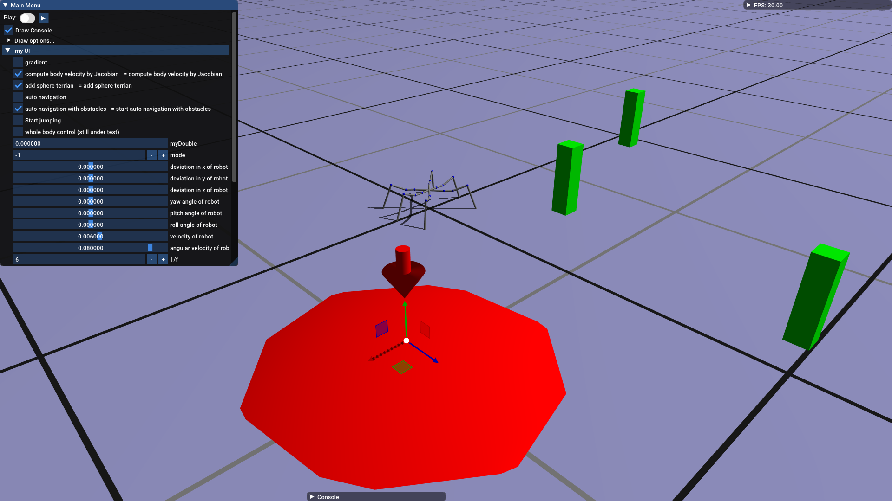
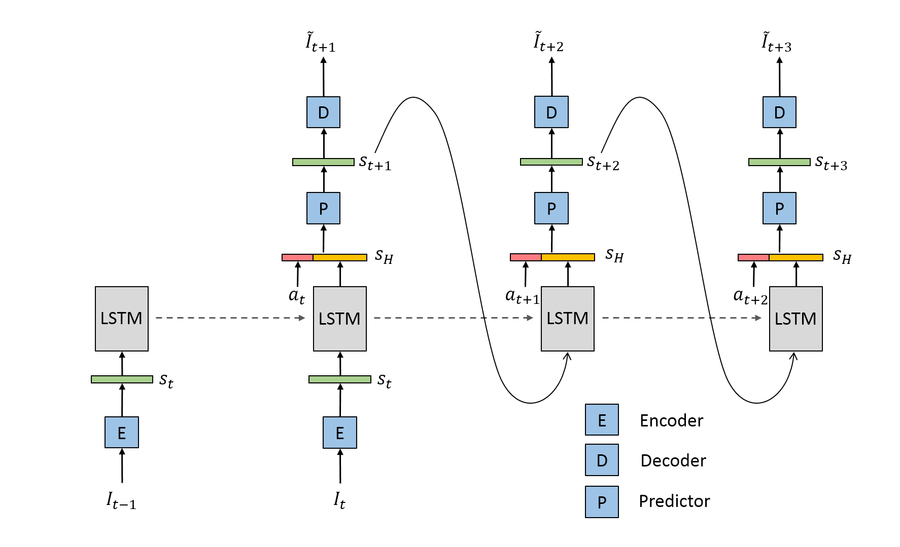
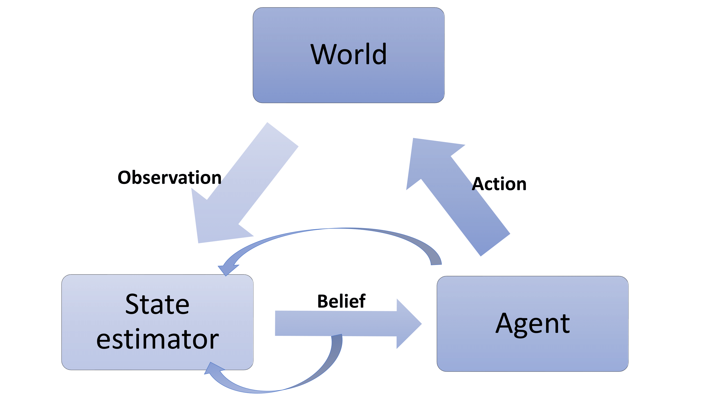

Chao Ni
Chao Ni |
“In me, the tiger sniffs the rose.” —— Siegfried Sassoon
Contact
Buchwiesen 2, 8052 Zürich
+41 788605204
Research Interests
I am particularly fascinated with research at the intersection of robotics and algorithmic and theoretical techniques (e.g., nonlinear control methods, machine learning, optimization, etc.). I am also interested in the cutting-edge reinforcement learning approaches in the control area.
Education
MSc in Robotics, ETH Zürich, Zürich, Switzerland, 2019-
BSc in Theoretical and Applied Mechanics, Peking University, Beijing, China, 2015-2019
BSc in Economics, Peking University, Beijing, China, 2016-2019
Visiting student, LCSR lab, Johns Hopkins University, Baltimore, USA, 2018.6-2018.9 advisor: Gregory Chirikjian
Research assistant, Machine Intelligence Group, Beijing, China, 2019.1-2019.8 advisor: Chongjie Zhang
Projects
MPC-feedback Trajectory Optimization for Wheeled-legged Robots
Wheeled-legged robots can cope with tough terrains in an energy-efficient way with the help of wheels, while it also preserves its ability to negotiate complex terrains through the presence of the leg. To achieve various tasks in different terrains, trajectory optimization (TO) is required to serve as guidance. Furthermore, a model predictive control (MPC) feedback planner is utilized to track this reference trajectory. In this thesis, we model the robot as a single rigid body, and the customized TOWR is used to handle the wheeled-legged robot trajectory optimization problem. The tracking reference is converted into joint space via inverse kinematics and be fed into MPC as guidance. We achieve this by adding the trajectory to the cost term of the MPC. A whole-body controller is used to generate torque commands for the real robots. The framework is verified on simulation and hardware. We show that such a framework can be modularized and TOWR can be replaced by other optimizers. MPC can help correct the infeasibility of the trajectory to make it physically practicable, as well as smooth the trajectory to avoid wild motions. Such a trajectory-correction scheme can be further explored to realize online trajectory computing and tracking. |
Hexapod Robot Control
|  | In this project, we developed an inverse kinematic solver for the hexapod and generated different gaits and propose a transition state when the hexapod has to change their gaits. We also implemented obstable avoidance algorithms on the tough terrains. The project and the video can be found at github |
Cooperative Representation Learning with Self-Supervised Synchronization
|  | In the DeepMind reinforcement learning environments, the numerical vectors far outperform images as input for general policies, such as PPO. However, there is a natural connection between the images and vectors which are some numerical values representing motions and angles of the robot joint. We leverage this idea to learn an encoder that maps the image to the latent space with self-supervised synchronization of images and vectors. We show that this latent space contains more significant information and could be used as input to achieve better performance in reinforcement learning problems. Collaborating with Guangxiang Zhu*, Hao Cheng, advised by Chongjie Zhang. |
Markov Decision Process and Variants: a Survey on Robot Learning
|  | In this survey, I want to summarize approaches in robot reinforcement learning. The survey mainly introduced Markov Decision Process based methods including some variants including partially observable Markov Decision Process, Bayesian learning based POMDP, model predictive control approach and KL divergence upper bound based POMDP. Apart from applying other cutting-edge machine learning and deep learning methods, we can also make use of other control methods such model predictive control in robot learning problems. pdf |
GORA-Net: a Temporal Reparameterization Method for Recognizing Actions in Video Sequences
 |
In this project, our object is video of robots which are making some motions. We need to find out what motion the video actually represents. Interestingly, one essentially same motion may be carried by two videos with different temporal distribution. We try to firstly quotient out the temporal fluctuations of the video, which means to make the sequence play speed at a standard time scale. After that, we build a deep learning framework to learn the motion represented by the video. The temporal reparameterization mapping can be regarded as a hidden layer in the recurrent neural network. pdf slide Collaborating with Sipu Ruan, advised by Gregory Chirikjian. |
Notes
Installation of HSL: ma57.html